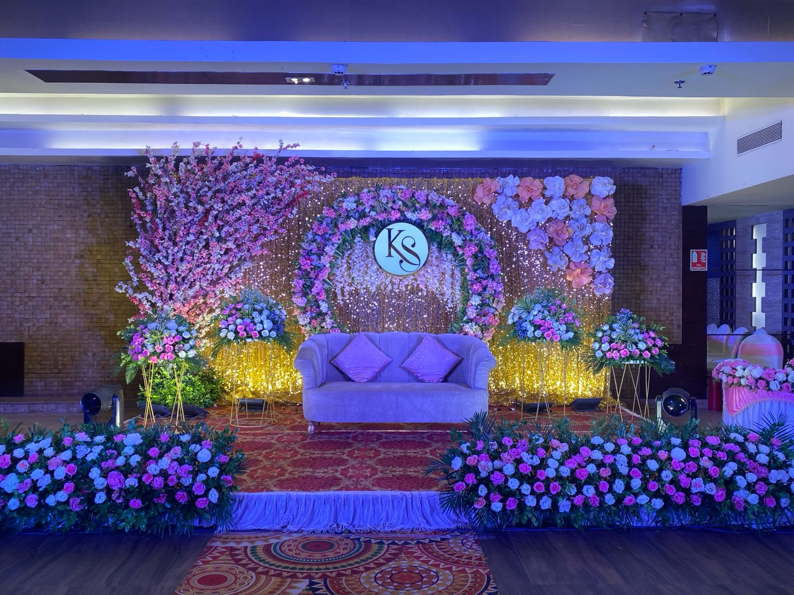
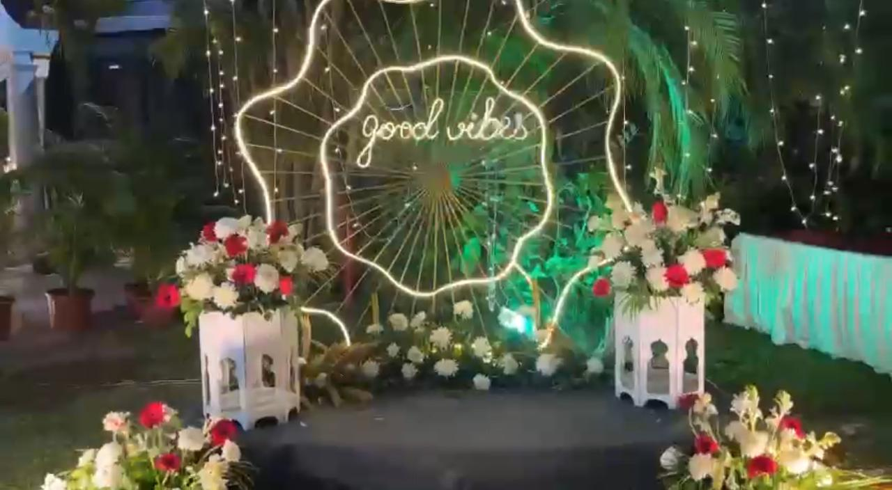
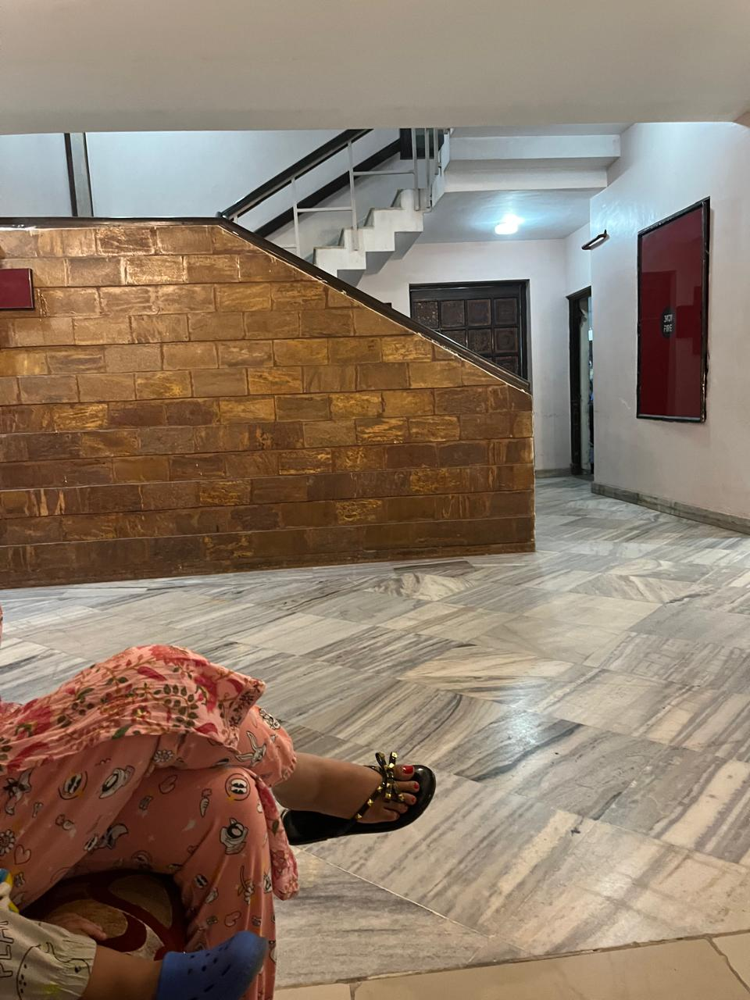
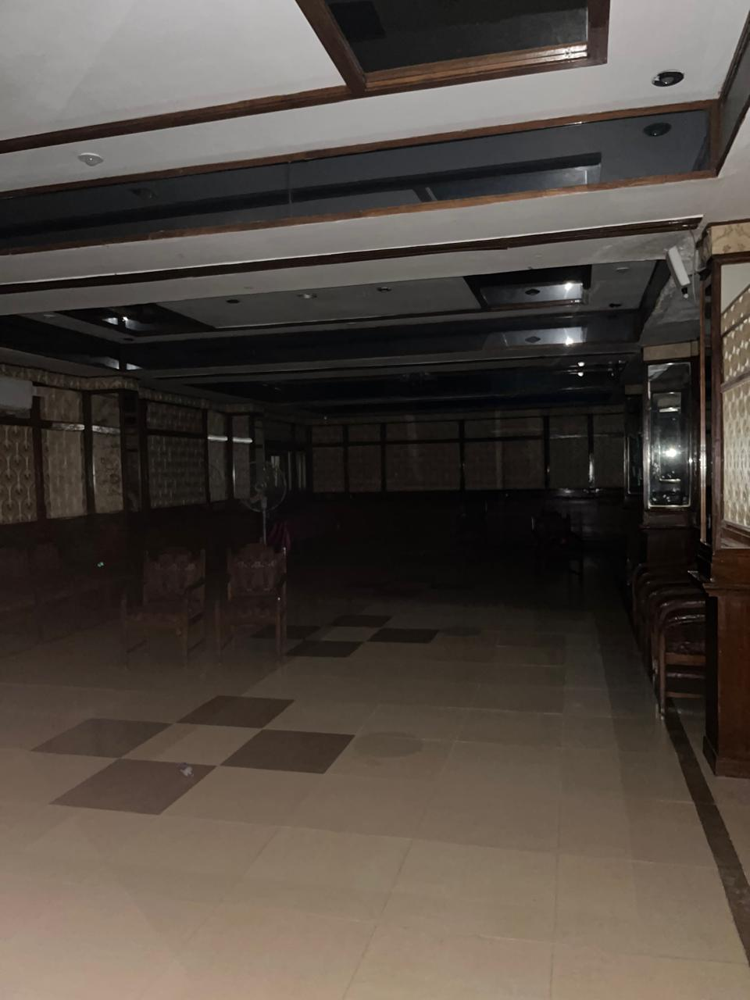
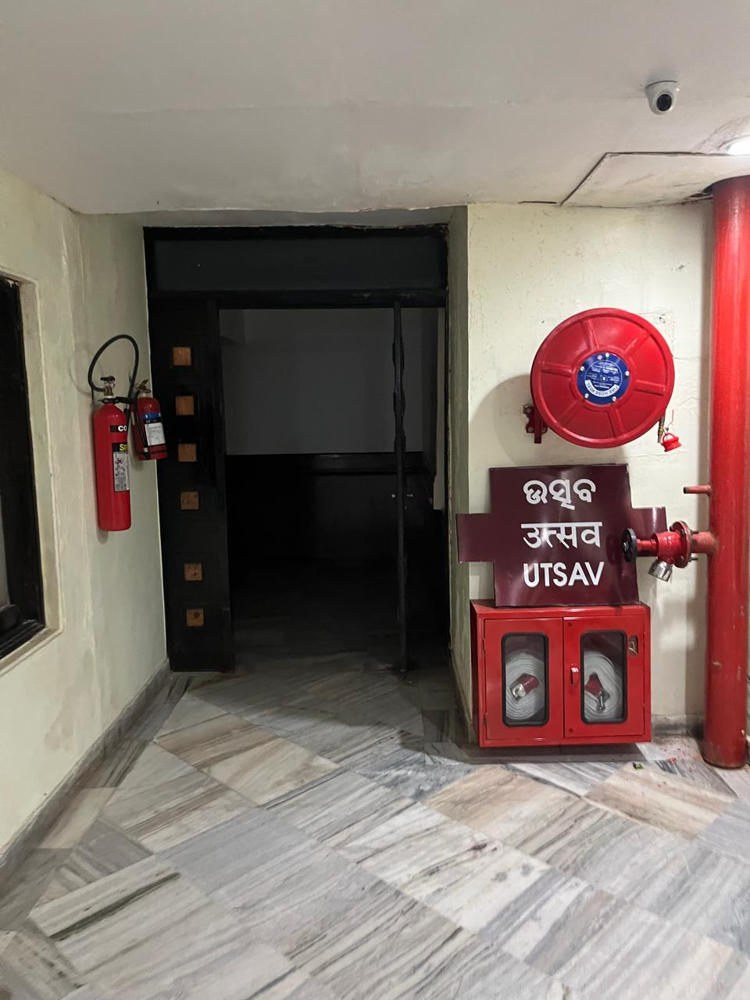
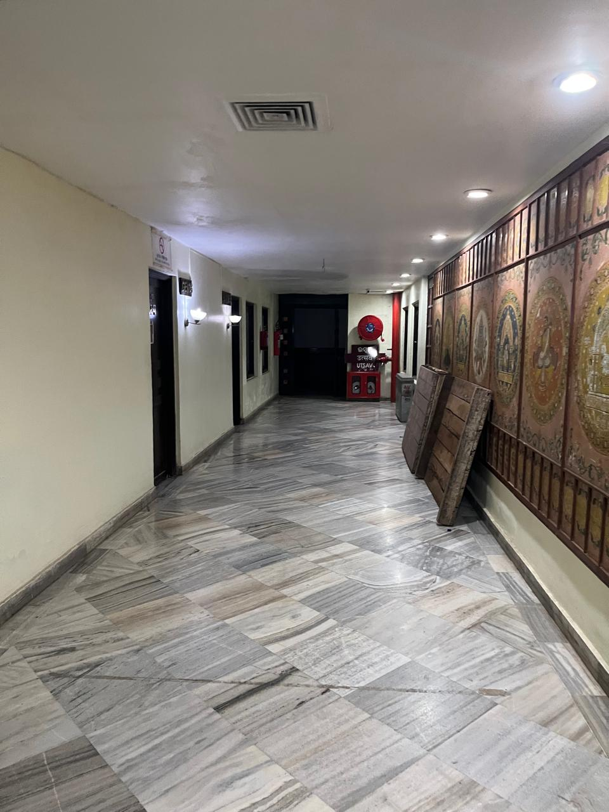
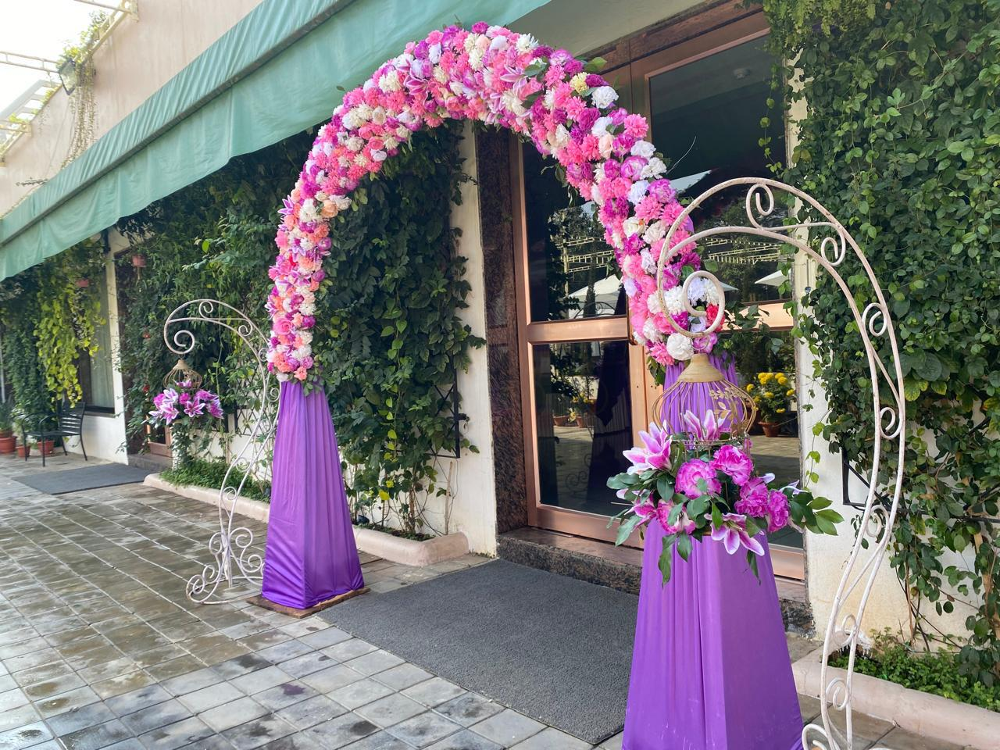

Below are the decoration requirements for the bridal hall, followed by example images for inspiration.

Stage Decoration

Selfie point near entrance to the hall with black-silver background

Carpet should start from here and end near bridal hall

Main stage should be installed here

Floral Decoration gate Pink gate with Square design

Should also be Carpeted from Konark hall

Gate with covering the fire wall with cottons